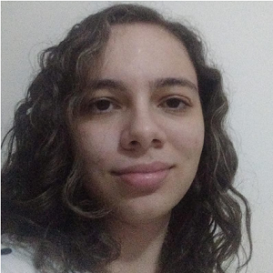

19 anos, solteira, natural de Franca/SP

Só por que alguma coisa
não faz o que você planejou
que ela fizesse não quer dizer
que ela seja inútil.
(Thomas Edison)
Sou uma latino-americana, sem dinheiro na conta, com alguns amigos, sou solteira e moro com meus pais, meu irmão mais novo e meu cachorro.
Fiz poucas coisas na vida, programo desde o ano passado e atualmente trabalho como estagiária do TI na Esquadros metalurgica.